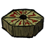

Things are pieces used to build a portal to the next world. Each Thing has a designated set piece that will spawn with it. There are five different pieces, and as such, 5 different Structures.
Things will tend to spawn with large distances separating them, and as such will encourage the player to explore the world to find all of them. A Divining Rod will help locate the Things. One is given to the player in Adventure Mode, or can be crafted.
Things can't be stolen by Krampus or Splumonkeys and won't be eaten by Eyeplants.
| Thing pieces | ||||
|---|---|---|---|---|
|
|
|
|  |
|
| Crank Thing | Box Thing | Metal Potato Thing | Wooden Thing | Ring Thing |
Things are widely dispersed around the world.
| Gameplay Mechanics | |
| Activities | Cooking • Crafting • Farming • Fishing • Sleeping |
| Environment | Day-Night Cycle • Moon Cycle • Nightmare Cycle • Earthquake • Lightning • Rain |
| Seasons | Summer • Winter • ( Autumn • Spring ) |
| Mechanics | Beard • Characters • Controls • Death • Durability • Experience • Fire • Food Spoilage • Freezing ( Overheating ) • Health • Hunger • Light • Map • Naughtiness • Non-renewable resources • Sanity • Saving (Wetness) |
| Mode | Adventure Mode • Sandbox Mode • Caves • Ruins |
| Others | Pig Village • Road (Trail) • Set Piece • Things |


{kind=link}
{kind=link}